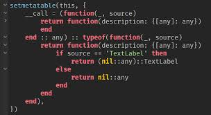

What is Lua(u)?
Luau is a fast, safe, and specialized scripting language derived from Lua 5.1, designed specifically by Roblox for creating experiences within Roblox Studio. It features gradual typing, enhanced performance, and backward compatibility with Lua, making it the standard for writing game logic, plugins, and user-facing application code.

Can lua(u) run in lua decompiler?
No — Luau is a modified Lua 5.1 with its own bytecode, opcodes, and VM, so standard Lua decompilers can’t read it; only Luau-aware Roblox tools can decompile it, and only imperfectly.
Can I obfuscate Luau code? What will happen?
Yes, you can obfuscate Luau in Roblox, but you can get banned if it’s used to hide malicious behavior or bypass Roblox moderation, because it violates Roblox ToS.